山/新月互通新的看法
#1 山/新月互通新的看法 作者：有志青年 发表时间：2008-1-10 20:52:03
山月、新月互通一型研究（一）
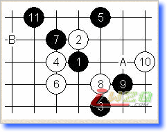
图一的白10几年前一度很流行，当时上海不少棋手曾深入研究过11-A的变化。那时我对本图的11比较有兴趣，不过在初步的研究中发现12-B是最强防，后因故未进一步深究此11是否必胜。另外，这些年在实战中也没有碰到这个变化，因此搁置至今。近来重新整理棋谱，昨日发现12-B在我的谱上依旧是个惊叹号，想来冷落这么久实在过意不去，遂拆解后将惊叹号换成字母“C”。
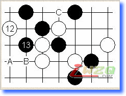
图二：黑13正常应手，此后白有A~C三点强防，其他的防点黑不难胜。这里略谈A、B两点的胜法，至于C点大家有兴趣可以自己拆解拆解。
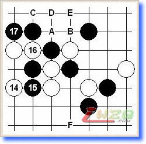
图三：17后白18防点很多，黑棋胜法多有类似。这里说说A~E的变化。如16-C，17-A，18-B，19-F！
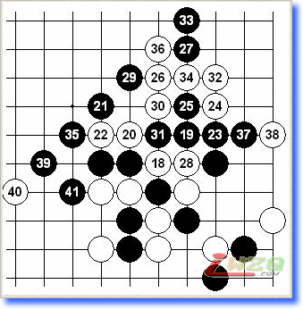
图四18-A：本图的18看似当然的防守，但黑19绝好形取胜容易。如20-30，21-23！
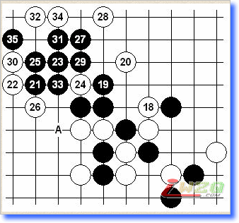
图五18-B：19、21局部巧手。如20-A，21-24、23-33后简单追胜。
山月、新月互通一型研究（二）
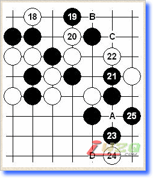
图六 18-C：19依旧是要点，20局部最强防。21是有趣的一手，似缓实佳的等招。局面由此打开，以下黑胜不难。如：22-A，23-B！如：22-C，23-23，24-A，25-D！
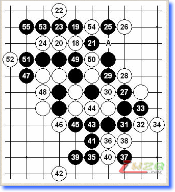
图七 18-D：本图白26虽然是局部最强防，但由于之前27的妙手多次出现，所以本图黑胜还是容易发现的。如：30-A，31-31！
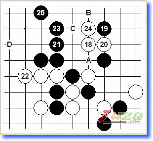
图八 18-E：发现黑19本图迎刃而解。如20-A，21-B！如：22-C，23-D。
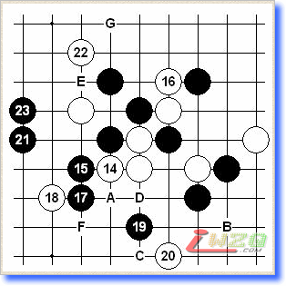
图九 14-B：15、17后由于黑棋棋形开阔，上下皆有余味，只需多看看全局容易找到胜法。
如：20-A，21-B！
如：18-F，19-22，21-G！
如：18-D，19-19！
如：18-19，19-C！
如：18-C，19-D，20-A，21-E！
山月、新月互通一型研究（三）
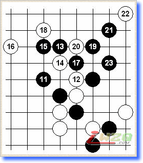
图十 12的变化一：略谈几个12的防守，本图的12不强。13是取胜要点。
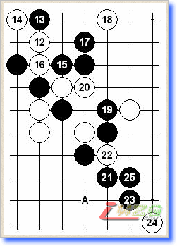
图十一 12的变化二：黑13多次出现，发现这一步后面就容易很多。本图的25与25-A是常见的基本棋形，就本型而言都能胜。
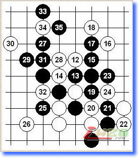
图十二 12的变化三：12弱防，黑直接追胜。
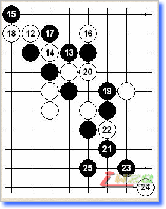
图十三 12的变化四：胜法与图十一类似，但图十一的25本图不成立。
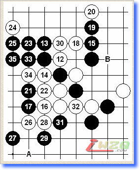
图十四 12的变化五：15是好棋！16如单防速败。17后黑棋优势太大，白棋依然不行。如：32-A，33-B。 如：28-30，29-28！
山月、新月互通一型研究（四）
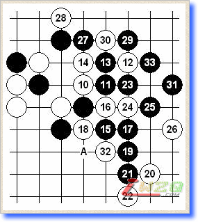
图十五 白10变化二：本篇略介绍几个白10弱防的胜法，本图的白10黑有多种攻法。黑11、13是较简明的一种，15以下是基本追胜手顺，21-A等招也胜。如：14-16，15-28！
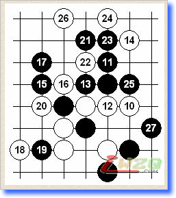
图十六 白10变化三：11是要点，以下黑棋容易。如：12-13，13-23，14-24，15-21！在对局面的分析和研究中，其实也是在不断的复习基础技巧，同时加深对棋的理解，进一步提供自身水平。
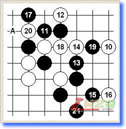
#2 Re:山/新月互通新的看法 作者：虚无 发表时间：2008-3-12 14:36:14
这个不错..
#3 Re:山/新月互通新的看法 作者：lfzxdh 发表时间：2008-3-29 10:24:17
真的不错哦~~就是不是LIB形式的，哈哈